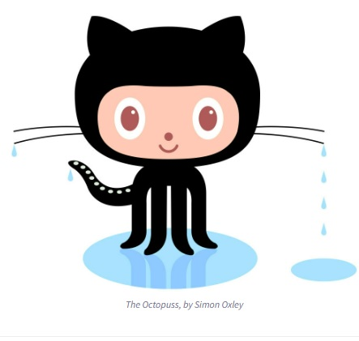

All About GitHub
- Q.What is a version control system?
A. The practice of tracing and managing changes in software code.
- Q.What is Git?
A.A free and open source distrubted version control system.
- Q.What is GitHub?
A.A for-profit company offering a cloud-based Git repository.
- Q.What is the difference between Git and GitHub?
A.Git is a version control systyem that lets you keep track of your code source history. GitHub is a cloud-based hosting service that lets youmanage your Git repositories.
- Q.Who started Github and how was it started?
A.Founders Chris Wanstrath,P.J. Hyett, Tomm Preston-Werner, and Scott Chacon using Ruby on Rails.
- Q.What company owns it now?
A. Microsoft.
- Q.How much does a GitHub account cost?
A.It is free, however there are premium options.
- Q.What is octocat?
A.Octocat is the mascot of GitHub.
Git/GitHub term:
- Repository:Contains all of your project files and each file's revision history.
- Commit:An individual change to a file.
- Fork:A new repository that shares code and visibility settings with the original "upstream" repository.
- Push:How you transfer commits from your local repository to a remote repo.
- Pull Request:Lets you tell others about changes you've pushed to a branch in a repository.
- Workflows: A configurable automated process that will run one or more jobs.
- Issues: Let you track your work on GitHub
- Raw Button: Opens the file in a raw form. Meaning no HTML formatting.
- Blame Button: Used to examine the contents of a file line by line to see when it was last modified
and who the author of the modification was.
